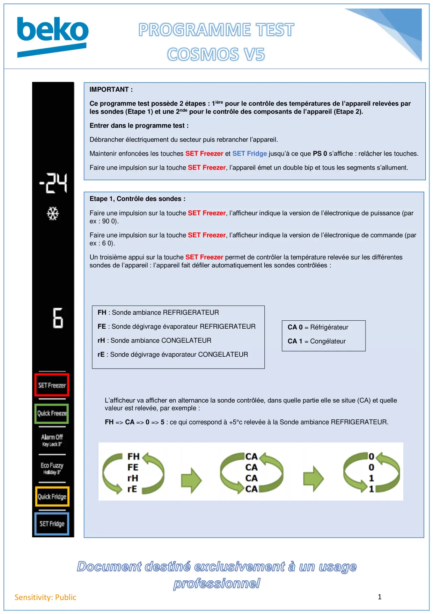
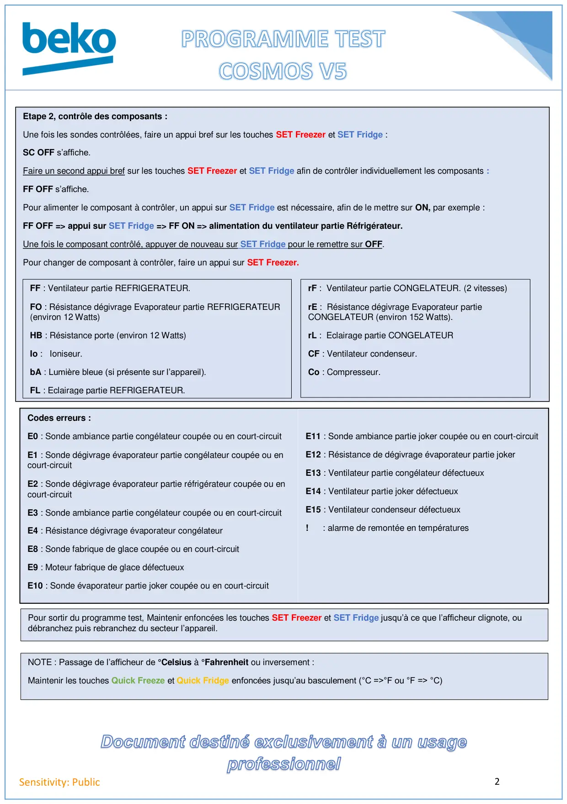

Prog Test REF Cosmos V4

1Sensitivity: PublicIMPORTANT :Ce programme test possède 2 étapes : 1ière pour le contrôle des températures de l’appareil relevées parles sondes (Etape 1) et une 2nde pour le contrôle des composants de l’appareil (Etape 2).Entrer dans le programme test :Débrancher électriquement du secteur puis rebrancher l’appareil.Maintenir enfoncées les touches SET Freezer et SET Fridge jusqu’à ce que PS 0 s’affiche : relâcher les touches.Faire une impulsion sur la touche SET Freezer, l’appareil émet un double bip et tous les segments s’allument.Etape 1, Contrôle des sondes :Faire une impulsion sur la touche SET Freezer, l’afficheur indique la version de l’électronique de puissance (parex : 90 0).Faire une impulsion sur la touche SET Freezer, l’afficheur indique la version de l’électronique de commande (parex : 6 0).Un troisième appui sur la touche SET Freezer permet de contrôler la température relevée sur les différentessondes de l’appareil : l’appareil fait défiler automatiquement les sondes contrôlées :FH : Sonde ambiance REFRIGERATEURFE : Sonde dégivrage évaporateur REFRIGERATEURrH : Sonde ambiance CONGELATEURrE : Sonde dégivrage évaporateur CONGELATEURCA 0 = RéfrigérateurCA 1 = CongélateurL’afficheur va afficher en alternance la sonde contrôlée, dans quelle partie elle se situe (CA) et quellevaleur est relevée, par exemple :FH => CA => 0 => 5 : ce qui correspond à +5°c relevée à la Sonde ambiance REFRIGERATEUR.
1 / 2
2Sensitivity: PublicEtape 2, contrôle des composants :Une fois les sondes contrôlées, faire un appui bref sur les touches SET Freezer et SET Fridge :SC OFF s’affiche.Faire un second appui bref sur les touches SET Freezer et SET Fridge afin de contrôler individuellement les composants :FF OFF s’affiche.Pour alimenter le composant à contrôler, un appui sur SET Fridge est nécessaire, afin de le mettre sur ON, par exemple :FF OFF => appui sur SET Fridge => FF ON => alimentation du ventilateur partie Réfrigérateur.Une fois le composant contrôlé, appuyer de nouveau sur SET Fridge pour le remettre sur OFF.Pour changer de composant à contrôler, faire un appui sur SET Freezer.FF : Ventilateur partie REFRIGERATEUR.FO : Résistance dégivrage Evaporateur partie REFRIGERATEUR(environ 12 Watts)HB : Résistance porte (environ 12 Watts)Io : Ioniseur.bA : Lumière bleue (si présente sur l’appareil).FL : Eclairage partie REFRIGERATEUR.Codes erreurs :E0 : Sonde ambiance partie congélateur coupée ou en court-circuitE1 : Sonde dégivrage évaporateur partie congélateur coupée ou encourt-circuitE2 : Sonde dégivrage évaporateur partie réfrigérateur coupée ou encourt-circuitE3 : Sonde ambiance partie congélateur coupée ou en court-circuitE4 : Résistance dégivrage évaporateur congélateurE8 : Sonde fabrique de glace coupée ou en court-circuitE9 : Moteur fabrique de glace défectueuxE10 : Sonde évaporateur partie joker coupée ou en court-circuitE11 : Sonde ambiance partie joker coupée ou en court-circuitE12 : Résistance de dégivrage évaporateur partie jokerE13 : Ventilateur partie congélateur défectueuxE14 : Ventilateur partie joker défectueuxE15 : Ventilateur condenseur défectueux! : alarme de remontée en températuresrF : Ventilateur partie CONGELATEUR. (2 vitesses)rE : Résistance dégivrage Evaporateur partieCONGELATEUR (environ 152 Watts).rL : Eclairage partie CONGELATEURCF : Ventilateur condenseur.Co : Compresseur.Pour sortir du programme test, Maintenir enfoncées les touches SET Freezer et SET Fridge jusqu’à ce que l’afficheur clignote, oudébranchez puis rebranchez du secteur l’appareil.NOTE : Passage de l’afficheur de °Celsius à °Fahrenheit ou inversement :Maintenir les touches Quick Freeze et Quick Fridge enfoncées jusqu’au basculement (°C =>°F ou °F => °C)
2 / 2